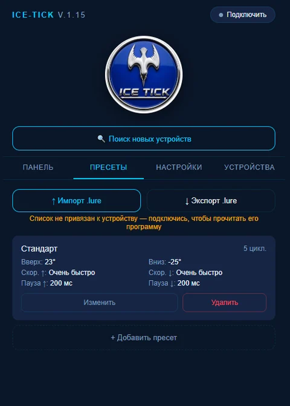

Пульт ICE-TICK
Управление ICE-TICK с телефона
Пульт ICE-TICK — это страница нашего сайта, которая открывается в браузере телефона. Ничего не нужно скачивать из неизвестных источников: выберите игру, нажмите «Старт», и кивок работает. Интернет на льду не нужен.
Открыть пульт Адрес пульта ICE-TICK: ice-tick.com/pult✓Ничего не скачивается
✓Без регистрации
✓Работает без интернета

AAndroid
- Откройте ice-tick.com/pult в браузере Chrome.
- Чтобы пульт ICE-TICK был под рукой, добавьте ярлык: меню ⋮ → «Добавить на главный экран». В некоторых версиях Chrome этот пункт называется «Установить» — это тот же ярлык на страницу, а не программа из интернета.
- На экране появится значок ICE-TICK. Открывайте пульт ICE-TICK с него — в том числе на льду без сети.
- При первом подключении разрешите Bluetooth и доступ к «Устройствам поблизости» (на старых Android — к геолокации).
iOSiPhone и iPad
- Браузеры Safari и Chrome на iPhone не работают с Bluetooth-устройствами. Поставьте бесплатный браузер Bluefy из App Store.
- Откройте в Bluefy адрес ice-tick.com/pult.
- Добавьте страницу в закладки Bluefy, чтобы быстро её находить.
- Перед выездом откройте пульт ICE-TICK, пока есть интернет, и не закрывайте вкладку.
1Подключение к ICE-TICK
- Вставьте заряженный аккумулятор 18650 и включите ICE-TICK.
- Включите Bluetooth на телефоне.
- В пульте ICE-TICK нажмите «Поиск новых устройств» и выберите свой ICE-TICK. В следующий раз он будет в списке ваших устройств.
- Выберите пресет или настройте игру: углы, скорость, паузы, число повторов. Нажмите «▶ Старт».
Настройки и программы сохраняются в самом кивке, поэтому телефон можно отключить и убрать в карман.
2Свои игры из конструктора
Конструктор игры рассчитан на компьютер: дома на большом экране удобно собрать игру по шагам и посмотреть, как ведёт себя приманка.
- Собрали игру на компьютере
- →
- Сохранили файл .lure
- →
- Отправили на телефон: Telegram, почта или Bluetooth
- →
- В пульте ICE-TICK: «Пресеты» → «Импорт .lure»
Перед импортом сначала подключитесь к ICE-TICK, затем загрузите файл и нажмите «Старт».
3Дома, перед первой рыбалкой
- Откройте пульт ICE-TICK, добавьте ярлык и один раз подключитесь к ICE-TICK.
- Сохраните свои игры под мормышку, балансир или блесну.
- Включите на телефоне режим полёта и откройте пульт ICE-TICK с ярлыка. Если он открылся — на льду интернет не понадобится.
?Если не подключается
- Проверьте, что Bluetooth включён и браузеру разрешены «Устройства поблизости».
- Убедитесь, что аккумулятор заряжен и ICE-TICK включён.
- ICE-TICK подключается только к одному телефону. Отключите его на другом телефоне.
- Закройте пульт ICE-TICK, выключите и снова включите Bluetooth, попробуйте ещё раз.
- Если пульт ICE-TICK не открывается без интернета, откройте его один раз со связью: он обновит сохранённую копию.
Не получилось? Напишите нам: support@ice-tick.com. Поможем разобраться.